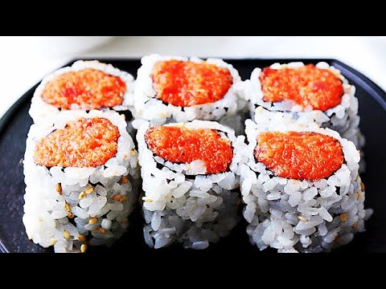

Spicy tuna

Desciption
Although Spicy Tuna Rolls don’t come from Japan (they were created in L.A.),
this modern sushi has become the most popular roll in many parts of the world.
It’s colorful, flavorful, and because the tuna is chopped up, even lower-quality
tuna cuts with stringy connective tissue can be turned tender and creamy
Ingredients
- Tuna
- Sriracha
- Soy Sauce
- Sugar
- Sesame Oil
- Scallions
- Tobiko
- Sushi rice
- Nori
- Cucumber
- Black Sesame
Steps
- chop up the scallions. I usually use the stems (white part) in the Spicy Tuna mixture and save the leaves (green part) to use as a garnish.
- mince up the tuna. The best way to do this is to cut the tuna into long thin strips and then turn the strips 90 degrees to chop it into cubes.
You can then go back over the tuna repeatedly with the knife to mince it as finely as you like. I usually like to leave a little bit of the texture,
so I don’t mince it too finely, but this is up to you. I also mince in the scallion stems with the tuna to make sure they’re nice and fine.
- Place the minced tuna mixture into a bowl and add the sriracha, soy sauce, sugar, sesame oil, and tobiko. Then it’s just a matter
of stirring this all together until the ingredients are evenly distributed. Be sure to keep the Spicy Tuna filling covered and refrigerated
until you are ready to use it.
- A full nori sheet is approximately 8-inches x 7-inches (20cm x 18cm). Most rolls require the sheets to be cut in half, so they are 4-inches wide.
You can do this with a sharp knife or scissors.
For Gunkan, the half sheets need to have 1-inch trimmed off one end, and then the remaining rectangle should be cut into 3 long strips.
- Tezu(手酢) literally means “hand vinegar” and is used to keep your hands wet while making sushi, so the rice doesn’t stick to them.
It’s made by mixing a few tablespoons of rice vinegar or sushi vinegar into a small bowl of water.
The vinegar prevents the taste of the rice from getting watered down.
- Uramaki rolls have the rice on the outside, so it’s important to use a sushi mat that’s been wrapped in plastic to keep the rice from sticking to the mat.
Place a sheet of nori at the edge of the mat, then wet your hands with Tezu and grab a handful of rice. Use your fingers on both hands to
place a row of rice along the nori’s top edge from one side to the other.
Making sure to keep your hands wet at all times, use the tips of your fingers to spread the row of rice from the top edge of the nori all
the way to the bottom edge. Think of this as picking and placing the rice rather than smearing it as you want to spread it without smashing
the individual grains. You also want to make sure you get the rice all the way to the edges of the nori in a thin, even layer (you should
almost be able to see the nori through the rice).
- Sprinkle the black sesame seeds evenly over the surface of the rice, and then use the nori to flip the rice over so the nori is facing up.
- Add a strip of cucumber across the center of the nori, and then spread some Spicy Tuna on top of the cucumber. Uramaki gives you a little
more runway to add extra filling than Hosomaki, but it’s still important not to overload it, or your roll won’t seal shut. My
recommendation is to start with less filling and slowly increase the amount as a small roll is easier to roll.
- To roll the Spicy Tuna Uramaki, lift the bottom edge of the mat up and over the filling and make sure the rice makes contact with the nori on
the other side. Then you want to lift the edge of the mat away from the rice and push the back of the mat to roll the roll onto its seam.
Cover the roll with the mat, and then press on all sides to give the roll its final shape. You want to apply enough pressure to get the rice
to adhere, but you don’t want to overdo it, or the filling will squeeze out of the sides of the roll.